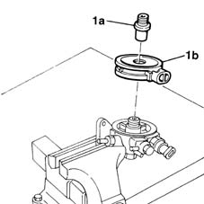

1044D10 fuel heater - r + r
- Path
- Procedures > 10 ENGINE UNIT > 1044 FUEL CIRCUIT PUMP/S AND DEVICES > 1044D fuel heating device > 1044D10 fuel heater - r + r
- Kind
- repair procedure (removal / refitting; the operation number is the code)
- Applies to
- engines: 1.9 JTD 8V; all production periods
- Interactive page
- https://sloeber94.github.io/elrnDB-fMltpl/en/#/2891387
Applies to: engines: 1.9 JTD 8V; all production periods
 Removing
Removing
 Refitting
RefittingOpen the bonnet lid.
1044B10 fuel filter assembly - r + r or replace
1044B20 fuel filter filtering element - replace
1. Undo the fitting (1a) and remove fuel heater (1b).

Applies to: engines: 1.9 JTD 8V; all production periods
Refitting
RemovingFit the fuel heater.
Tighten the central fitting.
1044B20 fuel filter filtering element - replace
1044B10 fuel filter assembly - r + r or replace
Close the bonnet lid.